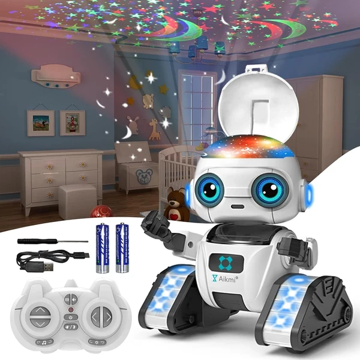
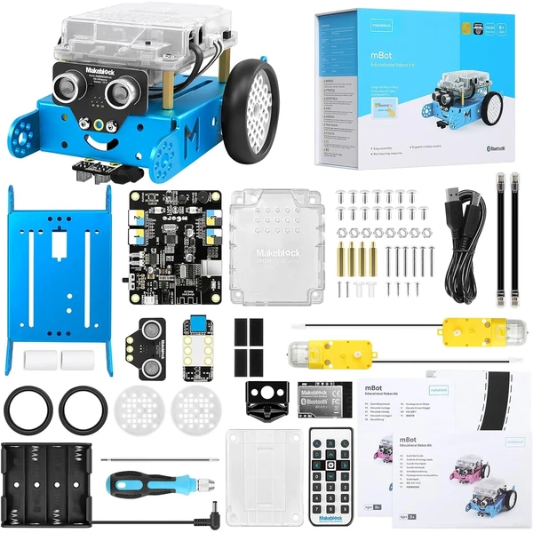
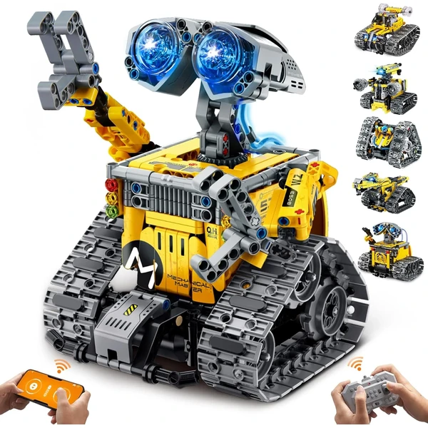
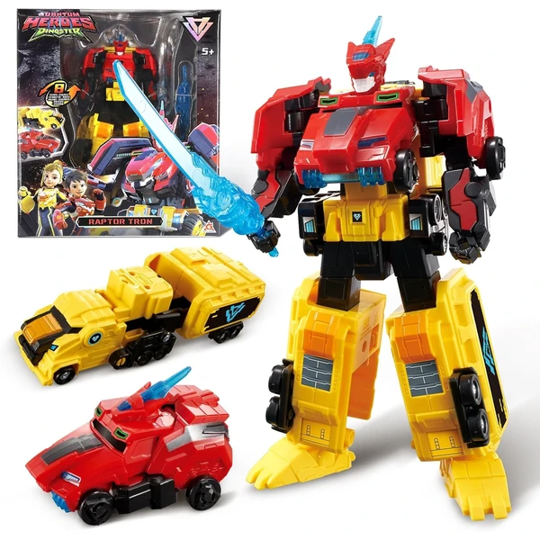
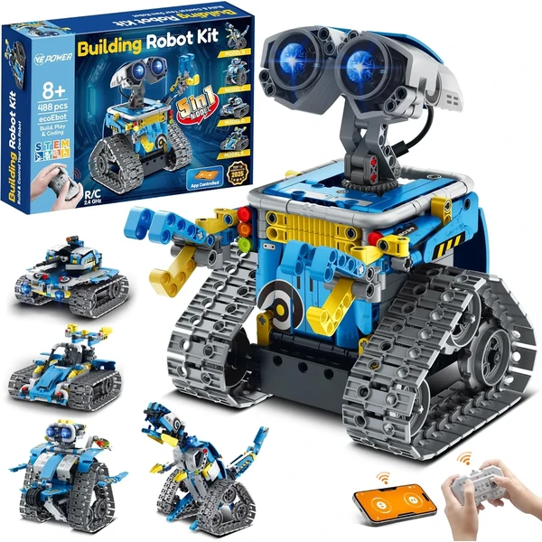

Code & Go Robot Mouse
Un ratón robot programable sin pantalla que introduce la codificación básica mediante tarjetas de dirección, con laberinto personalizable de 16 piezas y 30 tarjetas de codificación de doble cara para crear rutas infinitas.
⭐ ¿Por qué nos gusta?
- ✔ Programación sin pantalla, 100% segura y offline.
- ✔ Laberinto personalizable para crear retos propios.
- ✔ Desarrolla pensamiento lógico y resolución de problemas.
💬 Lo que más destacan las familias
Muchos padres coinciden en que el hecho de no depender de pantallas les da tranquilidad, y aun así los niños se enganchan diseñando rutas cada vez más complicadas. También se valora que el laberinto se pueda montar de formas distintas, así el juego no se agota rápido.
Ver en Amazon

Aikmi Robot Proyector de Estrellas
Un robot interactivo recargable con proyector de 8 luces nocturnas, control remoto y sensores de gestos, capaz de bailar con 5 canciones y 3 melodías, perfecto para jugar de día y proyectar estrellas por la noche.
⭐ ¿Por qué nos gusta?
- ✔ Proyector de estrellas nocturno integrado.
- ✔ Dual control: remoto y sensores de gestos.
- ✔ 90-100 minutos de juego por carga.
💬 Lo que más destacan las familias
Los compradores valoran especialmente que sirva para dos momentos muy distintos del día, jugar activamente y luego relajarse con la proyección de estrellas antes de dormir. También se comenta que responde bien tanto al mando como a los gestos, lo que le añade variedad al juego.
Ver en Amazon

Makeblock mBot Programable
Un robot educativo STEM de aluminio que se construye en 15 minutos, programable en bloques visuales o Arduino, con control remoto Bluetooth y funciones avanzadas como detección de obstáculos y seguimiento de líneas.
⭐ ¿Por qué nos gusta?
- ✔ Programación desde bloques hasta Arduino.
- ✔ Control remoto y Bluetooth para apps.
- ✔ Construcción rápida en 15 minutos con herramientas básicas.
💬 Lo que más destacan las familias
Entre los comentarios más habituales aparece que resulta un buen primer paso hacia la programación de verdad, sin quedarse solo en un juguete de bloques básicos. También se valora que el montaje sea rápido, así que empiezan a experimentar con él casi enseguida.
Ver en Amazon

IKUPER Robot 6 en 1
Un kit de construcción de 631 piezas con 6 modelos de robots diferentes (Gran Robot Pared, Pequeño Robot, Coche Acrobático, Robot Triángulo, Dinosaurio, Robot de Un Ojo) controlables por remoto 2.4GHz o app con 40 minutos de batería.
⭐ ¿Por qué nos gusta?
- ✔ 6 modelos distintos para construir una y otra vez.
- ✔ Ojos y mangueras luminosas que cambian de color.
- ✔ Control remoto y programación por app.
💬 Lo que más destacan las familias
Se repite bastante el comentario de que poder construir seis modelos distintos alarga mucho la vida del juguete, porque siempre hay una versión nueva que montar. Las luces de colores también gustan, ya que le dan un toque más llamativo al resultado final.
Ver en Amazon

Quantum Heroes Dinoster Raptor Tron
Un robot transformable 2 en 1 que cambia de dinosaurio mecánico a robot en 6 pasos, basado en la serie animada Quantum Heroes Dinoster, con articulaciones móviles y sin pilas necesarias para jugar en cualquier momento.
⭐ ¿Por qué nos gusta?
- ✔ Transformación 2 en 1 en solo 6 pasos.
- ✔ No requiere pilas, juega en cualquier lugar.
- ✔ Articulaciones móviles para múltiples poses.
💬 Lo que más destacan las familias
Un detalle que aparece una y otra vez es lo satisfactorio que resulta dominar la transformación de dinosaurio a robot, algo que los niños repiten una y otra vez solo por el gusto de hacerlo. También se valora que no necesite pilas, así siempre está listo para jugar.
Ver en Amazon

VEPOWER Robot 5 en 1
Un kit de 488 piezas con 5 modelos transformables (Robot Creador, Dinosaurio Mech, Robot Explorador y más) controlable por remoto y app, con articulaciones posables de 360° y 40 minutos de juego continuo por carga.
⭐ ¿Por qué nos gusta?
- ✔ 5 modelos distintos en un mismo kit.
- ✔ Articulaciones completamente posables.
- ✔ Programación intuitiva por app.
💬 Lo que más destacan las familias
Quienes lo han probado destacan que tener cinco modelos posibles mantiene el interés mucho más tiempo que un robot de una sola forma. También se comenta que las articulaciones se mueven con soltura, lo que anima a inventar poses y pequeñas historias.
Ver en Amazon